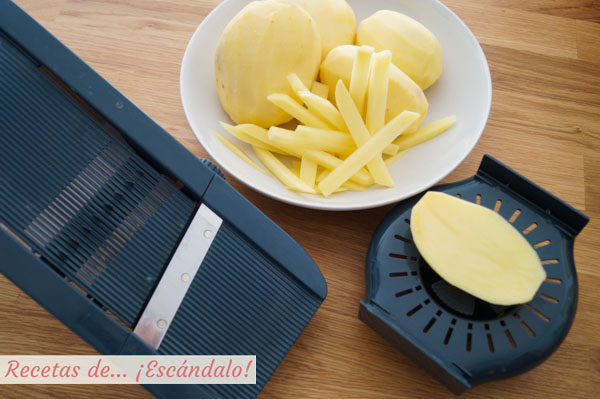
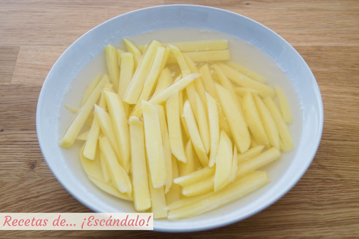
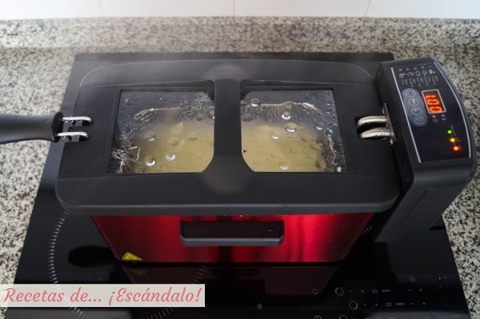

Preparación papas fritas
Ingredientes
- Papas para freír.
- Aceite de oliva o de girasol, cantidad suficiente para freír.
- Sal.
- Pela las patatas y córtalas en palitos más o menos del mismo tamaño. Yo he utilizado una mandolina que incluye unas cuchillas con las que cortar las patatas en palitos es de lo más sencillo, pero también puedes hacerlo con un cuchillo.

- Ponlas a remojar en un bol con agua fría durante 5 minutos para que suelten el almidón y así evitar que después se peguen unas con otras.

- Sécalas muy bien con papel de cocina o con un paño.
- Pon abundante aceite a calentar, ya sea en freidora o en sartén. Yo he utilizado mi freidora y la puesto a 140ºC, pero si lo hacéis en sartén esta temperatura es cuando introducís una patata y burbujea de forma constante y sin dorarse para nada, y por supuesto que el aceite no humee.

- Hay que cocinarlas alrededor de 5 minutos. El punto perfecto es cuando podáis atravesar una patata con un cuchillo y la notéis tierna.
- Saca el cestillo de la freidora o retíralas a un plato con una espumadera si estás con la sartén, y sube la temperatura. En freidora es hasta 180ºC, y en sartén sin que llegue a humear el aceite pero que esté bastante caliente, de forma que las patatas se doren en cuestión de 2-3 minutos. Están listas cuando se vean doradas a tu gusto, aunque vigílalas bien porque cambian de color muy rápidamente.
- Escúrrelas y déjalas en una bandeja amplia con papel de cocina para que escurran el exceso de aceite. Insisto en lo de la bandeja amplia para que no estén amontonadas, escurran bien el aceite y así conseguir que queden lo más crujientes posible.
- Es en este momento cuando todavía están calientes que deberás echarles sal al gusto por encima.